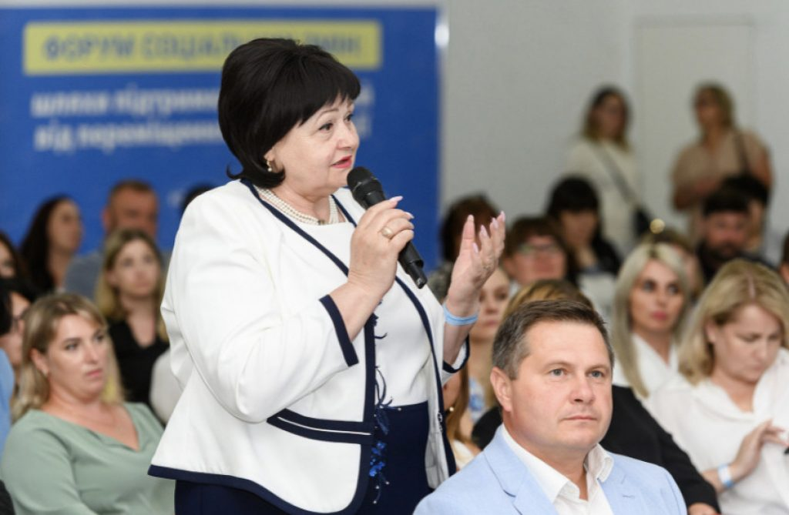
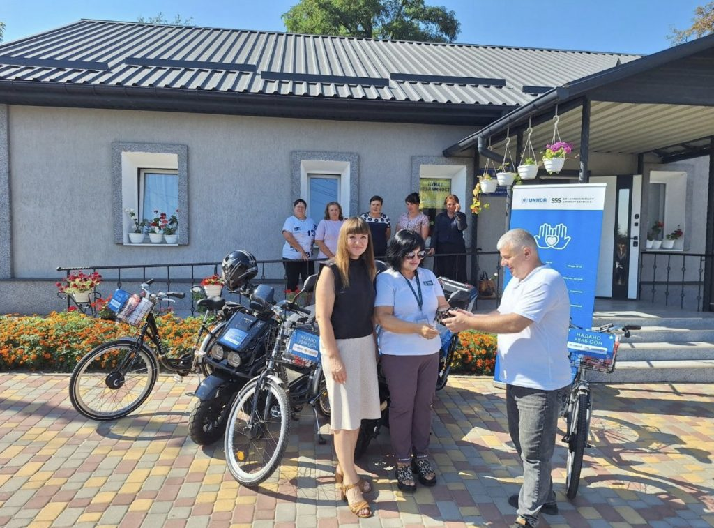

Для підвищення кваліфікації та фахового потенціалу працівниць і працівників системи соціального захисту ми організували серію навчальних заходів та консультацій. Зокрема, провели 33 семінари з кейс-менеджменту та впровадження постанови КМУ № 64, які відвідали 554 людини. Фахівчині й фахівці соціальної сфери отримали 2376 індивідуальних консультацій і роз’яснень від команди проєкту.
Окрему увагу приділили розбудові послуг довгострокового медсестринського догляду та наданню притулку відповідно до постанови КМУ № 1169. Для цього підготували 53 тренерок і тренерів з-поміж соціальних працівниць і працівників, фахівчинь і фахівців фонду. Вони провели навчання для 332 представниць і представників установ соціального захисту, охорони здоров’я та органів влади з 17 областей. Також команда проєкту провела 12 тренінгів із протидії професійному вигоранню та захисту персональних даних для 239 працівниць і працівників соціальної сфери.
Для обміну досвідом та розробки конкретних рішень щодо адаптації та інтеграції внутрішньо переміщених людей, зокрема літніх та маломобільних, у межах проєкту пройшла серія форумів та воркшопів для фахівчинь і фахівців соціальної сфери, органів місцевого самоврядування та громадського сектора:
- воркшоп «Шлях ВПО на Тернопільщині: від екстреної допомоги до сталої інтеграції» в Тернополі;
- обласний «Форум соціальних змін: шляхи підтримки від переміщення до інтеграції» у Житомирі;
- міжобласний «Форум соціальних змін: шляхи підтримки літніх людей від переміщення до інтеграції» у Чернівецькій області;
- міжобласний «Форум соціальних змін: шляхи підтримки літніх людей від переміщення до інтеграції» у Бучі;
- міжобласний «Форум соціальних змін: шляхи підтримки літніх людей від переміщення до інтеграції» в Кропивницькому.
Медіа «Суспільне. Житомир» опублікувало матеріал про успішний досвід інтеграції та працевлаштування ВПО у Звягельській громаді. Його героїнями стали учасниці обласного форуму, який пройшов у Житомирі: начальниця Управління соціального захисту населення Звягельської міської ради та голова місцевої ради ВПО.
Для посилення автономності та операційної спроможності установ соціального захисту ми передали 167 ноутбуків, 24 багатофункціональні пристрої для друку, сканування та копіювання, 88 зарядних станцій, 59 блоків безперебійного живлення, 35 планшетів, 92 мобільні телефони, а також 24 електроскутери та 55 велосипедів для соціальних робітниць і робітників, які надають послугу догляду вдома.
Журналісти «Суспільне. Миколаїв» розповіли, як техніка, передана нашим фондом, полегшує щоденну роботу соціальних робітників Мішково-Погорілівської громади.

